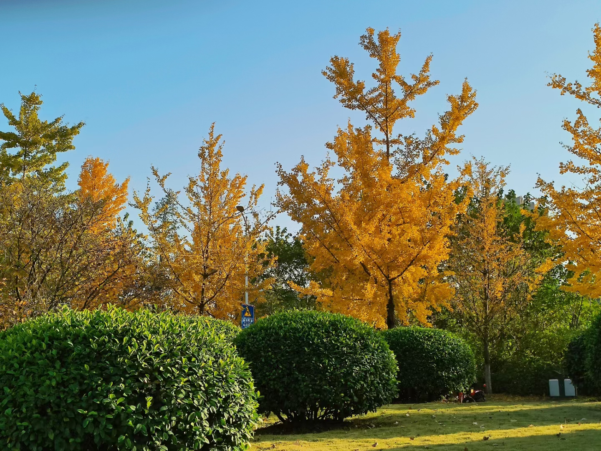

HUST
"博学 审问 慎思 明辨"
今年九月第一次来武汉
华科校园非常大
每天都在想去哪个食堂
和各种各样的任务搏斗
华中科技大学
简称华中大，位于湖北省武汉市，是中华人民共和国教育部直属的综合性研究型全国重点大学、位列国家“双一流” “985工程”。 学校由原华中理工大学、同济医科大学、武汉城市建设学院于2000年合并组建。
简称华中大，位于湖北省武汉市，是中华人民共和国教育部直属的综合性研究型全国重点大学、位列国家“双一流” “985工程”。 学校由原华中理工大学、同济医科大学、武汉城市建设学院于2000年合并组建。
华科面积非常大，
分为东西两个校区，有三十多个食堂，背靠喻家山，毗邻喻家湖，森林覆盖率72%，景色优美，环境宜人。
分为东西两个校区，有三十多个食堂，背靠喻家山，毗邻喻家湖，森林覆盖率72%，景色优美，环境宜人。

十一月，
武汉在初冬迎来了热烈的秋。此时，校园内的树叶变黄，落叶纷飞。梧桐和银杏交织错落，黄色和金色相互映衬，整个校园变得明丽而又浪漫。
武汉在初冬迎来了热烈的秋。此时，校园内的树叶变黄，落叶纷飞。梧桐和银杏交织错落，黄色和金色相互映衬，整个校园变得明丽而又浪漫。
还有只在效果图中看到过全貌的新计算机与自动化大楼，据说我们这一届能够赶上它投入使用，期待耶!